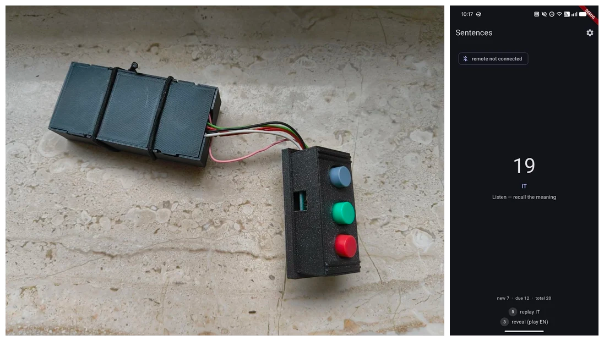

required buttons for an audio-only flashcard interface
I've been recently prototyping an interface for learning flashcard-style, using only audio and no visuals. This can then be used e.g. while walking around or while lounging on the couch very lazily. Here is the basic flow, with language learning as an example:
- Hear a target language sentence
- Think about whether you understand it
- Click a button to "Reveal" the solution
- Hear the translation of the sentence
- Rate (via one of two buttons) whether you got it right or not
I implemented this via an ESP32-based "bluetooth keyboard", and a tiny Android app connecting to the ESP and playing sounds (the UI is only used for bluetooth setup and debugging):

While testing, I noticed that it's often necessary to repeat phrases, e.g. because of background sounds or because I lost the context because something else happened around me.
- "Before Reveal", repeating means repeating the target language phrase.
- "After Reveal", repeating means repeating first the target language phrase, then the translation (helps with judging whether you got it right or not after a delay)
This can be mapped to the 3 buttons currently available, e.g.:
- Before Reveal:
grey: Revealred: Repeatgreen: dead
- After Reveal
grey: Repeatgreen: Score as Correctred: Score as Wrong However, as you can probably see, this gets quite confusing; we have modes and interaction overloads, and due to the context of the app no visual grounding on what is happening.
I think four buttons are required, so Wrong, Correct, Repeat and Reveal can be separate. They should ideally be distinguishable by feel.
This creates a serious struggle for space, especially if this will ever make its way to a finger ring (or two) as I initially planned, but I think it's possible (or at any rate necessary).